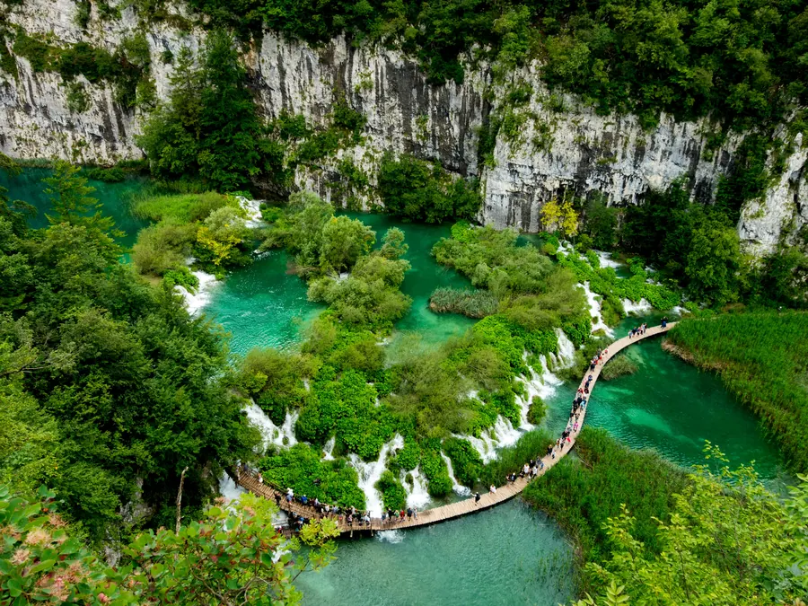
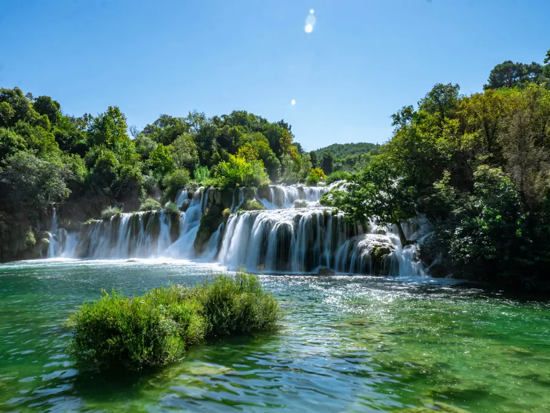
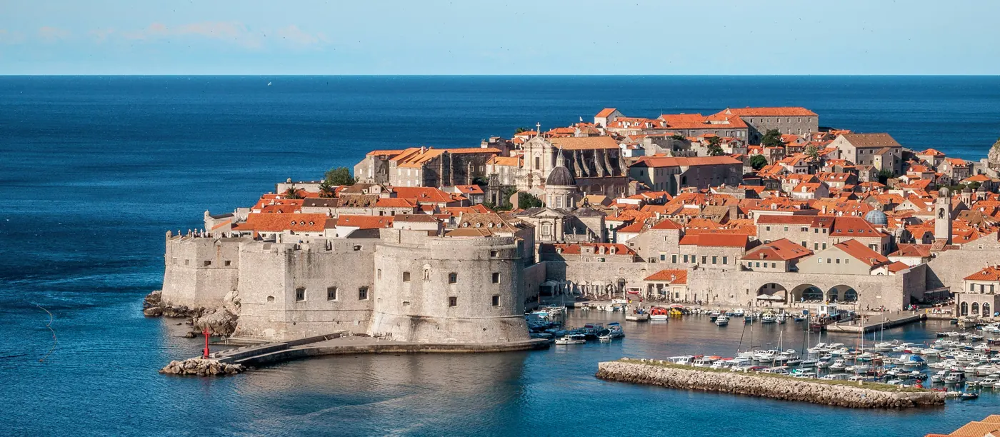

Privatni jednodnevni izleti iz Splita
Upoznajte Hrvatsku udobno, uz privatne izlete, fleksibilno vrijeme polaska i iskusnog vozača.

Izleti
Plitvička jezera
10–12 satiNajstariji i najveći nacionalni park u Hrvatskoj, poznat po 16 kaskadnih jezera povezanih slapovima i drvenim stazama kroz netaknutu šumu.
- UNESCO svjetska baština
- 16 tirkiznih jezera
- Drvene pješačke staze
- Privatni prijevoz u oba smjera

Nacionalni park Krka
8–10 satiBliže Splitu od Plitvica, Skradinski buk i staze uz rijeku Krku nude opušten i fleksibilan dan u prirodi.
- Slapovi Skradinskog buka
- Prekrasna priroda
- Vožnja brodom po želji
- Fleksibilan plan

Privatni izleti po želji
Želite posjetiti Dubrovnik, Trogir, Omiš, Mostar ili neko drugo odredište? Organiziramo potpuno privatne izlete prema vašem planu. Javite nam se i složit ćemo izlet za vas.
Zatražite izlet po željiČesta pitanja
Jesu li izleti privatni ili s drugim turistima?
Potpuno privatni. Svaki izlet je jedno vozilo s vozačem samo za vašu grupu, nikad zajednički prijevoz.
Što je uključeno u cijenu izleta?
Privatno vozilo, vozač i fiksna cijena za cijeli dan; vozač vas čeka kod parka za povratak.
Jesu li uključene ulaznice za nacionalni park?
Ne. Ulaznice i hrana nisu uključeni u cijenu prijevoza i plaćaju se zasebno na dan izleta. Gorivo, cestarina i parking kod parka su uključeni.
Koliko traju izleti na Plitvice i Krku?
Izlet na Plitvička jezera traje 10 do 12 sati u oba smjera, a na Krku, koja je bliže Splitu, 8 do 10 sati.
Možete li organizirati izlet negdje drugdje?
Da, organiziramo potpuno privatne izlete po želji u Dubrovnik, Trogir, Omiš, Mostar i druga odredišta. Pošaljite nam svoj plan.